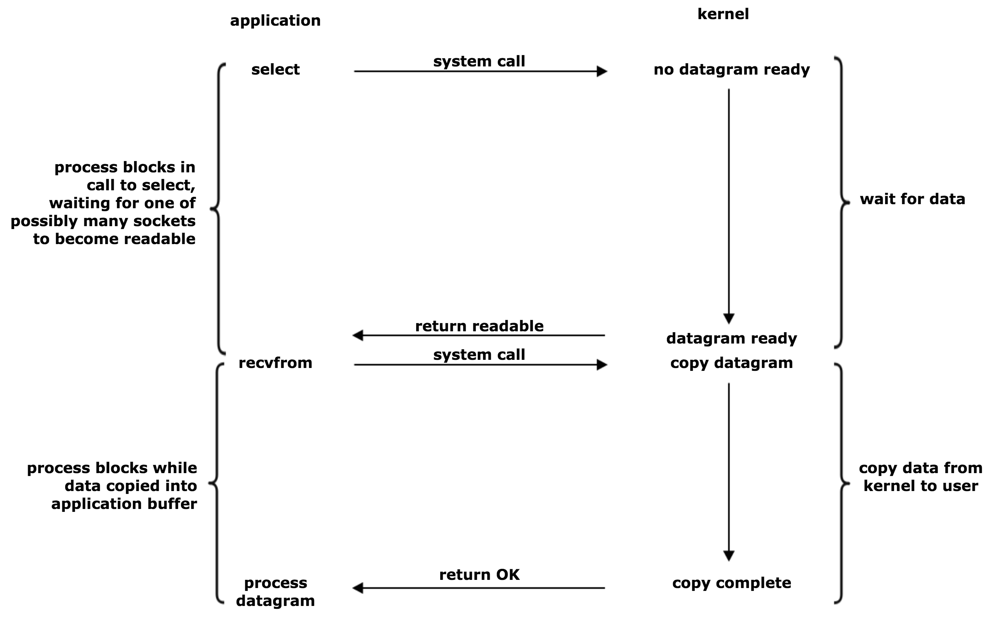

class: center, middle # IEMS 5703<br/>Network Programming and System Design ### Lecture 4 - Blocking and Non-blocking IO #### Albert Au Yeung<br/>1st February, 2018 --- class: middle, center # Additional Notes on the Last Lecture --- class: split # Subclassing Thread - When you have more complex operations in a thread .column-left[ ```python from threading import Thread class SquareThread(Thread): def __init__(self, n): Thread.__init__(self) self.n = n def run(self): print(self.n * self.n) for i in range(5): t = SquareThread(i) t.start() ``` ] .column-right[ - When subclassing `Thread`, your class should always have a `run()` method - Always call the **base class constructor** if you override the constructor - Operations in the `run()` method will be executed once the `start()` method is invoked ] --- # Multi-threading and Locks - We mentioned that we should use a **lock** when allowing multiple threads to access shared objects - In fact, whether an operation is on an object is **thread-safe** depends on whether it is an **atomic** operation in the **bytecode** level - Even though there is the GIL in Python, it does NOT mean that a function or a single line of Python code will be executed altogether before the OS switches from one thread to another thread - The GIL simply makes sure that codes from only one thread is being executed at the same time - Ref: http://effbot.org/pyfaq/what-kinds-of-global-value-mutation-are-thread-safe.htm --- # Multi-threading and Locks - You can inspect the bytecodes of your Python program using the `dis` module ```python >>> import dis >>> dis.dis("a += 1") 1 0 LOAD_NAME 0 (a) 3 LOAD_CONST 0 (1) 6 INPLACE_ADD 7 STORE_NAME 0 (a) 10 LOAD_CONST 1 (None) ``` - When there is a [context switch](https://en.wikipedia.org/wiki/Context_switch) between loading the value of `a` and storing the new value of `a`, there is a synchronization problem - **Conclusion**: always use a lock on shared objects --- class: middle, center # Multi-threading in Network Programming --- # The C10K Problem - The problem of optimising network sockets to handle **a large number of clients** at the same time. - **C10k** = concurrently handling 10,000 connections - This is NOT about how FAST your server can operate (requests handled per second) - The requirement is on the server to return response to each client within an acceptable period of time - Ref1: [http://www.kegel.com/c10k.html](http://www.kegel.com/c10k.html) - Ref2: [WhatsApp handles 2M TCP Connections](https://blog.whatsapp.com/196/1-million-is-so-2011) --- # Revisiting Our TCP Server ```python import socket server_socket = socket.socket(socket.AF_INET, socket.SOCK_STREAM) server_socket.bind((socket.gethostname(), 50001)) server_socket.listen(10) while True: (client_socket, address) = server_socket.accept() data = client_socket.recv(1024) client_socket.sendall(data) client_socket.close() ``` - Everything in this program runs on the **main thread** - `accept()`, `recv()` and `sendall()` are all **blocking** - Can it handle many connections at a time? --- # Revisiting Our TCP Server ### Problem of using *<span style="color: #2288AA">a single thread</span>* and *<span style="color: #2288AA">blocking I/O</span>* - Server cannot accept connections while serving a client - Backlog keeps increasing, some clients eventually will be **refused** - Even if a client is in the backlog, it might take a long time before it is served - Clients with **timeouts** implemented will report failure to the users - Very low throughput --- class: split # Use Multi-threading .column-left[ ```python # Subclassing the Thread class class ClientServingThread(Thread): # Constructor accepts the client socket and address def __init__(self, socket, address): Thread.__init__(self) self.socket = socket self.address = address # What will be done when the thread starts def run(self): data = self.socket.recv(1024) self.socket.sendall(data) self.socket.close() ``` ] .column-right[ - Let's remove the first limitation by using multiple threads - Create a client serving thread class - Each thread will handle one client and the terminate ] --- # Use Multi-threading - We create a new ClientServingThread whenever we have accepted one connection - The server will return to accept another connection once a new thread has created ```python import socket server_socket = socket.socket(socket.AF_INET, socket.SOCK_STREAM) server_socket.bind((socket.gethostname(), 50001)) server_socket.listen(10) while True: (client_socket, address) = server_socket.accept() client_thread = ClientServingThread(client_socket, address) client_thread.daemon = True client_thread.start() ``` - Can we benefit from using multiple threads? --- # Use Multi-threading ### What if 1,000 clients connect at about the same time? - 1,000 threads will be created and started at the same time - Is 1,000 **too many**? Depends! - **Consider**: - Each client may retrieve data from or update data in a database - Each client may require the server to perform a lot of computation - The server may connect to other services in order to serve a client - You need to understand your system and design accordingly - Let's see what we can do if we want to **limit** the number of threads started --- # Using a Thread Pool - In the `concurrent.futures` module, there is a `ThreadPoolExecutor` class - We can use it to create a thread pool with a **maximum number** of active threads ```python from concurrent.futures import ThreadPoolExecutor import socket ... # create and bind socket executor = ThreadPoolExecutor(max_workers=5) while True: (client_socket, address) = server_socket.accept() client_thread = ClientServingThread(client_socket, address) client_thread.daemon = True # Submit a target function 'serve_client' with arguments to # the executor (note we cannot use the subclass defined above) executor.submit(serve_client, client_socket, adddress) ``` --- # Multi-processing in Socket Programming - Can we use **multi-processing** instead of threading to implement the TCP server? - Yes, however, you **CANNOT** pass client sockets directly to child processes as arguments ```python import multiprocessing # Create a queue socket_queue = multiprocessing.Queue() ... # Once you have a client socket, put that into the queue handle = multiprocessing.reduction.reduce_socket(client_socket) socket_queue.put(handle) ... # In the new process, recover the socket from the queue handle = socket_queue.get() client_socket = multiprocessing.reduction.rebuild_socket(handle) ``` --- class: middle, center # The `socketserver` Module --- # The `socketserver` Module - Python provides a [`socketserver` module](https://docs.python.org/3/library/socketserver.html) ```python import socketserver class MyTCPHandler(socketserver.BaseRequestHandler): # You implement this class and override the handle() function def handle(self): # self.request is the socket connected to the client # self.client_address contains the IP address and port of the client print(self.client_address[0]) data = self.request.recv(1024).strip() self.request.sendall(data) if __name__ == "__main__": # Create the server with socketserver.TCPServer(("localhost", 50000), MyTCPHandler) as server: # Keep the server running until interrupt server.serve_forever() ``` --- class: split # The `socketserver` Module .column-left[ ```python class MyTCPHandler(socketserver.BaseRequestHandler): def handle(self): print(self.client_address[0]) data = self.request.recv(1024).strip() self.request.sendall(data) if __name__ == "__main__": server = socketserver.TCPServer( ("localhost", 50000), MyTCPHandler) server.serve_forever() ``` ] .column-right[ - As you can see, you don't have to worry about creating the server socket, listening and accepting client connections - However, this is still a **single threaded** and **synchronous** server - Each client is served one after another ] --- # Threaded TCP Server - You can subclass the `ThreadingMixIn` class to create a threaded server ```python import socketserver class MyRequestHandler(socketserver.BaseRequestHandler): def handle(self): data = self.request.recv(1024) self.request.sendall(data) class ThreadedTCPServer(socketserver.ThreadingMixIn, socketserver.TCPServer): pass if __name__ == "__main__": server = ThreadedTCPServer(("localhost", 50000), MyRequestHandler) server.serve_forever() ``` --- class: middle, center # Asychronous Programming --- class: equal-split # Asynchronous Programming - Consider the two models of programming we have came across so far - Ref: http://krondo.com/in-which-we-begin-at-the-beginning/ .column-left[ <center> <img src="img/sync.png" width="18%"> </center> - The single thread synchronous model - Everything is executed sequentially - Latter tasks can consume output of earlier tasks that have completed ] .column-right[ <br/><br/> <center> </center> - The multi-thread or multi-process parallel model - Tasks are executed in parallel - If tasks need to communicate with each other they need shared objects ] --- class: split # Asynchronous Programming .column-left[ - There is also a model called **asynchronous programming** - All tasks run in a single thread, but their execution can be **interleaved** - NO two tasks will be executed at exactly the same time - **The programmer would decide** when to switch from one task to another task (in contrast to the multi-thread model) - **Why** do we need such a model? ] .column-right[ <center> <img src="img/async.png" width="50%"> </center> ] --- class: split # Asynchronous Programming .column-left[ - Both **computation** and **I/O** operations will be involved in many tasks (e.g. sorting a list of numbers vs. loading data from a DB) - For a **<span style="color: #4455AA">single-threaded synchronous model</span>** - One task has to wait until another task has finished, even when the previous task is blocking - For a **<span style="color: #44AA55">multi-threading model</span>** - Different threads must either carry out independent tasks, or use some sophisticated way to communicate among each other ] .column-right[ <center> <img src="img/block.png" width="50%"> </center> - A task may invoke quite a lot of blocking function calls during with the CPU is idling ] --- class: split # Asynchronous Programming .column-left[ - An asynchronous program will **switch** to perform another task when one task is blocked by some I/O operations - Such a program will only **block** when no tasks at hand can make any progress (e.g. all tasks are waiting for downloading something from the Internet) - Thus, an asynchronous program is also called a **non-blocking** program ] .column-right[ <center> <img src="img/async.png" width="40%"> <br/><br/> The asynchronous model </center> ] --- # Asynchronous Programming ### When should we use asynchronous programming? 1. The number of tasks to execute is large, so it is likely that there is always at least one task that can make progress 2. The tasks perform a lot of I/O operations (thus using a synchronous model will waste a lot of time) 3. The tasks are independent from one another, no or little inter-task communication is needed - Sounds like what a **server** needs to do when facing a lot of **clients**! --- # Revisit the TCP server ```python import socket server_socket = socket.socket(socket.AF_INET, socket.SOCK_STREAM) server_socket.bind((socket.gethostname(), 50001)) server_socket.listen(10) while True: (client_socket, address) = server_socket.accept() data = client_socket.recv(1024) client_socket.sendall(data) client_socket.close() ``` - We have discussed how to use multi-threading or multi-processing to implement the TCP server - How about using the **asynchronous model**? --- # Non-blocking Socket Operations - By default, all socket methods are **blocking** (e.g. `accept()`, `recv()`, `send()`) - We can switch to use sockets **asynchronously** by using the `setblocking()` method - Then all socket methods will return **immediately** (!?) ```python # Create a TCP/IP socket server = socket.socket(socket.AF_INET, socket.SOCK_STREAM) server.setblocking(0) ... ``` --- # Non-blocking Socket Operations - What happen after we set sockets to non-blocking? - `accept()`, `recv()`, `send()` may return **without having done anything**! - We need a way to know whether calling that method will result in something done - Only call `accept()` when a client is trying to connect - Only call `recv()` when some data is ready to be read - Only call `send()` when we have successfully connected - Soluton 1: using the `select()` function in the `select` module - Ref: https://docs.python.org/3.6/library/select.html --- class: split # Using `select` .column-left[ <center>  <br/> (From W. Richard Stevens. Unix Network Programming. 1990) </center> ] .column-right[ - `select()` is a function that you should use when you want to do **I/O multiplexing** - **I/O multiplexing**: switching between different I/O tasks when they are ready for reading or writing ] --- # Using `select` - To use select, you need to prepare **three** lists - A list of sockets you want to **read from** - A list of sockets you want to **write to** - A list of sockets you want to **check for errors** - It also returns three lists: - A list of sockets you can read from - A list of sockets you can write to - A list of sockets with errors ```python readables, writables, w_errors = select(inputs, outputs, [], 60) # 60 is timeout in seconds, empty lists will be returned upon timeout ``` - Note: on Unix/Linux systems, `select()` works on file handlers too (because everything is a file) --- # Using `select` ```python import socket from select import select server = socket.socket(socket.AF_INET, socket.SOCK_STREAM) server.setblocking(0) server.bind(('localhost', 56789)) server.listen(10) inputs = [server] # we want to accept (read) from this socket outputs = [] # nothing we want to write to so far while True: readables, writables, w_errors = select(inputs, outputs, [], 60) ... ``` --- # Using `select` ```python while True: readables, writables, w_errors = select(inputs, outputs, [], 60) for soc in readables: if soc is server: # server socket is readable, someone is connecting client_socket, address = soc.accept() client_socket.setblocking(0) # also set to non-blocking inputs.append(client_socket) # a socket that we want to read from else: # It is a client socket, let's read from it data = soc.recv(1024) if data: # Handle the data else: # Empty string, client has disconnected # Close this socket, remove it from all lists ``` --- # Using `select` - Continue... ```python for soc in writables: # This should be a client socket # Send something to it if you want to soc.send("Hello from Server") for soc in w_errors: # Socket has error # We should close the socket and remove it from all lists ... ``` - See complete example at [https://pymotw.com/3/select/](https://pymotw.com/3/select/) --- class: middle, center # Asynchronous I/O --- # Introduction - `asyncio` is included in the standard library starting from Python 3.4 - A single-thread asynchronous model of programming - Using `asyncio` allows you to switch between different **coroutines** when there are blocking calls - Before diving into `asyncio`, let's learn about **generators** and **coroutines** <center> <img src="img/event_loop.png" width="65%"> <br/> (Ref: https://eng.paxos.com/python-3s-killer-feature-asyncio) </center> --- class: split # Iterators .column-left[ - In Python, we can use a for loop to loop over: - a list (e.g. `[1, 2, 3, 4, 5]`) - a dictionary (e.g. `{1: "a", 2: "b"}`) - a file (e.g. `for line in infile: ...`) - Things that can be iterated over are called **iterable objects** - We can turn iterable objects into **iterators** using the `iter()` function ] .column-right[ ```python >>> l = iter([1, 2, 3, 4]) >>> l <list_iterator object at ...> >>> next(l) 1 >>> next(l) 2 >>> next(l) 3 >>> next(l) 4 ``` ] --- # Generators ### **Generator** functions provide a simplified way to create iterators - Generator returns a sequence of values, one at a time - It *generates* a new value **on-the-fly**, without the need to store all values in memory - Consider the `range()` function. How would you implement that? --- # Generators ### Our first attempt to implement the `range()` function ```python def my_range_1(n): nums = [] i = 0 while i < n: nums.append(i) i += 1 return nums ``` - **Problem**: if `n` is large (say 1,000,000), you end up creating a huge list of integers that eats up a lot of memory --- # Generators ### A better approach ```python def my_range_2(n): i = 0 while i < n: yield i i += 1 ``` - `yield` is used in place of `return`, now the function becomes a **generator** - When the line `yield i` is reached, the function will return the value of `i`, and **pause**, until we call its `next()` function again --- # Generators ```python nums = my_range_2(100) print(nums) # Prints something like <generator object my_range_2 at 0x7f4f480c4410> next(nums) # returns 0 next(nums) # returns 1 ... ``` - Your function becomes an **iterator**, which can be iterated over to return a new value at a time - The function is **NOT terminated**, because it remembers its current state - Now, you notice that a `for` loop is just a loop that helps you to call the `next()` function automatically if given a generator --- # Generators ### Another example: ```python def get_odds(n): """Return odd numbers up to n""" i = 0 while i < n: i += 1 if i % 2 == 0: continue yield i o = get_odds(100) next(o) # returns 1 next(o) # returns 3 ... ``` --- # Generators - You can also chain iterators: ```python def get_every_two_odds(odds): i = 0 for o in odds: if i % 2 == 0: yield o i += 1 nums = get_every_two_odds(get_odds(100)) next(nums) # returns 1 next(nums) # returns 5 next(nums) # returns 9 ``` --- # From Generators to Coroutines - For generators, we use the `yield` keyword to specify where the function should return a value and stop, waiting for the next call of `next()` - What if we want something the other way round: we want a function to pause and wait for something to **be sent** to it? - Consider an example: we would like to write function that returns whether a given number `x` is a divsor of a given number `n` (e.g. if n = 10, x = 2, then this function returns `True`) ```python def is_divisor(x, n): return n % x == 0 is_divisor(2, 10) # returns True is_divisor(3, 32) # returns False is_divisor(5, 55) # returns True ``` --- # From Generators to Coroutines - We can also re-write this in the form of a **coroutine**, one that would **wait for an input** to be sent into it ```python def is_divisor(n): while True: x = yield yield n % x == 0 d = is_divisor(55) next(d) d.send(2) # returns False next(d) d.send(5) # returns True next(d) d.send(11) # returns True ``` --- class: split # Coroutines .column-left[ ```python def is_divisor(n): while True: x = yield yield n % x == 0 d = is_divisor(55) next(d) d.send(2) # returns False next(d) d.send(5) # returns True next(d) d.send(11) # returns True ``` ] .column-right[ - The first `yield` is for waiting input to be sent into the function - The second `yield` is for emitting a value - We need to call `next()` to make the function arrives at the line `x = yield` again. ] --- # Coroutines - Another way to implement the `is_divisor` coroutine ```python def is_divisor(n): x = 1 while True: divisible = False if n % x == 0: divisible = True x = yield divisible d = is_divisor(55) next(d) # this would return True d.send(2) # returns False d.send(5) # returns True d.send(11) # returns True ``` --- class: split # Coroutines .column-left[ ```python def is_divisor(n): cnt = -1 x = 1 while True: divisible = False if n % x == 0: cnt += 1 divisible = True x = yield (divisible, cnt) d = is_divisor(55) next(d) # this would return True d.send(2) # returns (False, 0) d.send(5) # returns (True, 1) d.send(11) # returns (True, 2) ``` ] .column-right[ - A coroutine stores its internal **state** - For example, we can count how many times we see a divisor of `n` ] --- # More on Coroutines - **Coroutines** can be considered as generalized **subroutines** (a sequence of instructions that carry out some tasks) - Coroutines have **multiple entry points** for suspending and resuming execution (unlike subroutines) - Coroutines allows a programmer to **explicitly** handle context changes (when to switch from one task to another task) - (Compare this with multi-threading or multi-processing) --- class: split # Event Loop .column-left[ - We will discuss more about `asyncio` in the next lecture, but let's get to know about the **event loop** first - Event loop: *"a programming construct that waits for and dispatches events or messages in a program"* - It keeps on waiting for events to happen, and execute different tasks depending on what event happens Ref: [A guide to asynchronous programming in Python with asyncio](https://medium.freecodecamp.org/a-guide-to-asynchronous-programming-in-python-with-asyncio-232e2afa44f6) ] .column-right[ <center> </center> ] --- class: middle, center # Individual Mini Project --- # Project ### Important Dates - **1-page Proposal**: 10th March, 2018 (Saturday) - **Final Submission**: 30th April, 2018 (Monday) ### Basic Requirements - A network application - Implemented in Python 3.5 or later - Use the client-server architecture - Use some forms of network programming - Use some forms of concurrent programming --- # Project ### Proposal - Submit a **1-page PDF file** to my email - Describe the application that you would like to work on - What is the problem you application tries to solve? - What technology would you use to develop the application (e.g. TCP, HTTP, Websockets) - What do the server and the clients do? - What are the technical challenges? - A list of libraries that you will use --- # Project ### Example 1: A Multi-user Chatroom - Implement a multi-user chatroom using TCP programming - Multiple users can connect to the server, any message sent from one client will be broadcast to all clients by the server - Some special commands for clients to perform specific tasks (e.g. list all users who are online, send private message to another client) - ... --- # Project ### Example 2: File Synchronization Application - An application that helps you to synchronize the content of a folder across different computers - Each computer has a client installed, whether a file is added/deleted/modified in the folder, it will update the server - The server will notify all clients and allow them to retrieve the latest content of the folder --- # Project ### Example 3: News Subscription System - A server program keeps collecting the latest news from some News API or by scraping the news headlines from a News website - Multiple clients can connect to the server and request for an updated list of news - Each client may choose to only receive news articles of a certain topic (e.g. by filtering the headlines using some keywords) - When the client is connected, it will receive constant update of the latest news --- # Project ### Example 4: Web-based Real-time Game - Implement a real-time game using Websocket - The server is an HTTP server that allows Web clients (e.g. Web page with JavaScripts) to connect, and start a game together - The server will keep record of the states of the game, and determine who is the winner or when to terminate the game - Examples: - Quiz game - Memory game (e.g. http://mypuzzle.org/find-the-pair) --- class: center, middle # End of Lecture 4